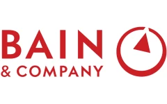
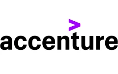
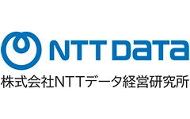
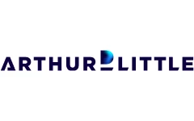
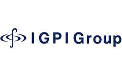
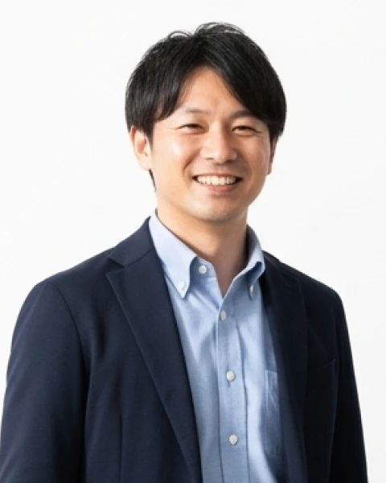
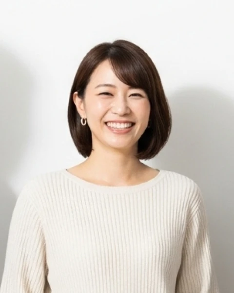
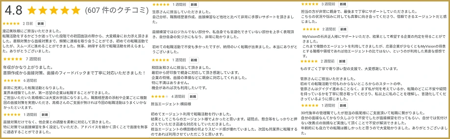

業界未経験者向け
コンサル転職
コンサル転職
内定可能性診断
MBB / BIG4 / 大手コンサル /
シンクタンクへの転職可能性をチェック
- 質問数
- 12問
- 所要時間
- 約1分
- 費用
- 無料
質問1/ 12
残り12問
当てはまる場合は「はい」
前回の回答：
回答内容は内定可能性の判定にのみ利用します。
診断結果
内定可能性のあるコンサル企業と、具体的なキャリアロードマップを無料で診断します。
完全無料 コンサル転職No.1※1エージェント
MyVisionコンサルティングから 具体的な求人紹介を受ける
※本診断は自己申告による簡易チェックであり、内定を保証するものではありません。診断結果はあくまで目安としてご参考ください。
2025年度、1,200名以上の方が
MyVisionコンサルティングで
コンサル業界への転職に成功しました。
求人取り扱い企業（一例）







選ばれる理由
コンサル転職No.1（※1）の支援体制
職務経歴書の作成からケース面接対策、内定後のご相談まで一貫してサポートします。
01効果的かつ効率的なケース面接対策
コンサル中途採用の決め手はケース面接です。応募企業ごとにマンツーマンでの徹底トレーニングが可能です。
02ファームとの連携で選考機会を創出
採用キーマンへのあなたの経歴プレゼンや、弊社独占の1day選考会開催により、選考・年収アップの機会を最大化します。
03高解像度なトータルサポート
職務経歴書や面接での、あなたのスキル・ポテンシャルの表現方法を徹底的にブラッシュアップ。入社後にも役立つ転職活動をご体験ください。
完全無料／登録30秒／事前準備なし
MyVisionコンサルティングに 無料で求人を紹介してもらう
転職事例


ご利用者さまの転職事例
大幅な年収アップの事例が続出しています。
セキュリティエンジニア550万円
ITコンサル800万円
年収+250万円

SIerエンジニア740万円
DX/AIコンサル1000万円
年収+260万円

広告代理店営業790万円
ビジネスコンサル1000万円
年収+210万円
事業会社 企画職640万円
戦略コンサル800万円
年収+160万円
※金額は年収です。MyVisionコンサルティングの実際の転職成功事例から抜粋しています。人物画像はイメージです。
ご利用者さまの評価
累積600件超の評価を
無料 MyVisionコンサルティングに 30秒で無料登録する
累積600件超の評価を
頂いております
4.8／5.0
Googleクチコミ 累積600件超（※2）

ご予約が集中しています。
お早めにご相談ください。
無料 MyVisionコンサルティングに 30秒で無料登録する